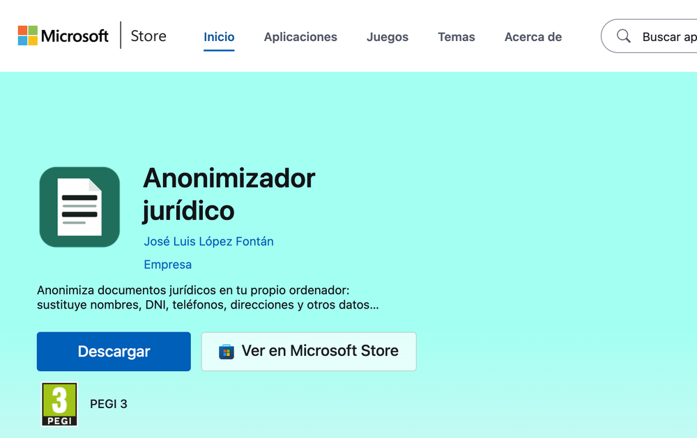
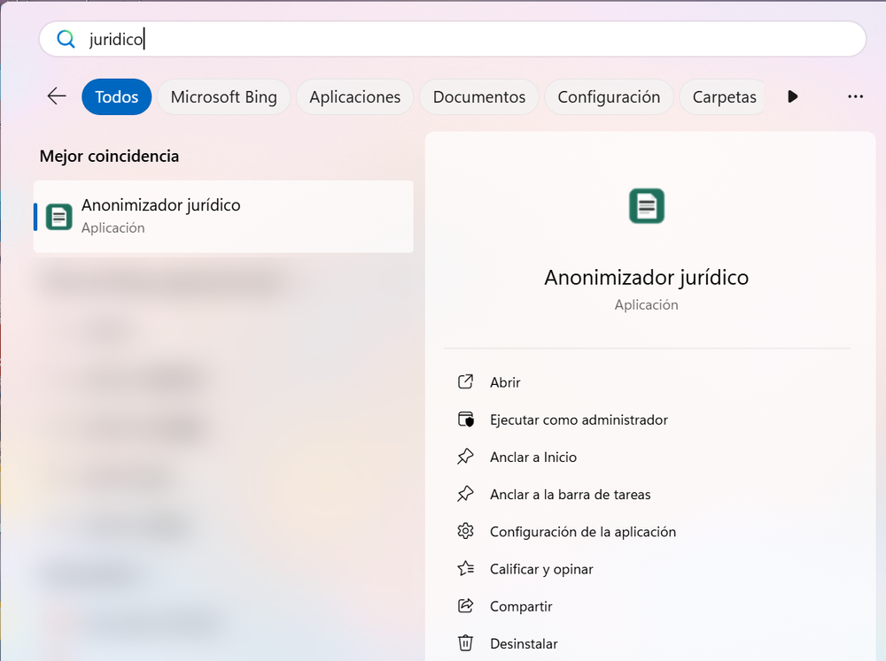
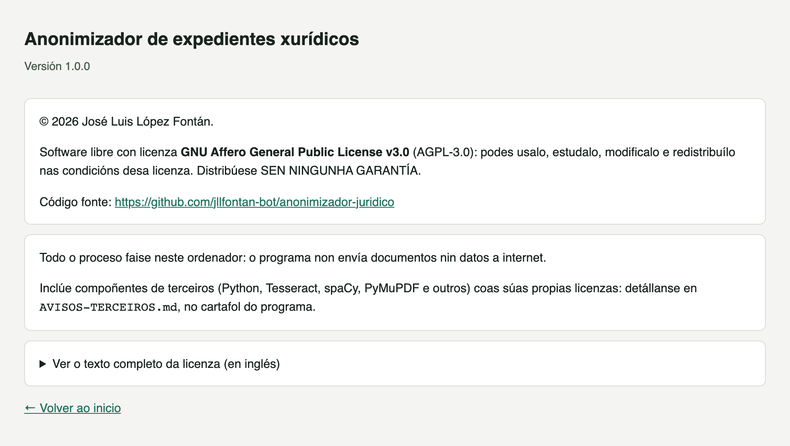
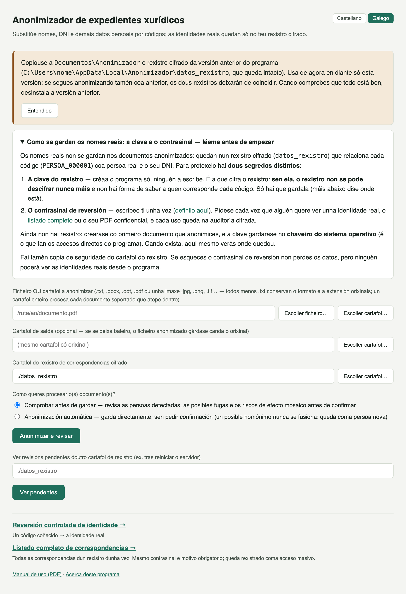

Guía de instalación · Anonimizador de expedientes xurídicos
Instalación dende a Microsoft Store, paso a paso
O programa instálase coma calquera outra aplicación da Microsoft Store e leva dentro todo o necesario (Python, OCR, librarías e modelo de idioma): non hai que instalar nada máis, e despois funciona sen conexión a internet. Inclúe onde quedan os teus datos, como pasar dende a versión anterior do programa, verificación final, solución de problemas habituais e un apéndice cos procedementos legais e organizativos a ter en conta se este sistema se vai usar de forma continuada.
SistemaWindows 10 (versión 2004 ou posterior) ou Windows 11, de 64 bits
Tempo estimado5 minutos
DataOutubro de 2026
01 · Requisitos do sistema
Requisito
Detalle
Sistema operativo
Windows 10 (versión 2004 ou posterior) ou Windows 11, de 64 bits. Non hai versión para Mac nin para Linux.
Python, Tesseract e librarías
Non hai que instalar nada. O paquete da Store xa leva dentro Python, Tesseract (OCR en galego e castelán), todas as librarías e o modelo de idioma.
Espazo en disco
Uns 650 MB (a Store amosa o tamaño exacto antes de instalar).
Memoria RAM
8 GB recomendados; non precisa tarxeta gráfica (GPU).
Internet
Só para descargar o programa da Store e para recibir as actualizacións. O uso diario é 100 % local: o programa non se conecta a internet.
Contas e permisos
O programa é gratuíto e non precisa conta nin rexistro de ningún tipo. Tampouco pide permisos de administrador.
WebView2
Compoñente de Windows Microsoft Edge WebView2 Runtime, co que o programa amosa a súa xanela. Vén con Windows 11 e cos Windows 10 actualizados. Se faltase, o programa avisa e ofrece abrirse no navegador; o compoñente é gratuíto e descárgase da páxina de Microsoft.
Antes de empezar — copia de seguridade
Se algunha vez se perde a clave de cifrado (que este programa garda no Administrador de credenciais de Windows), o rexistro de correspondencias xa cifrado NON SE PODE DESCIFRAR NUNCA MÁIS — non hai «recuperar contrasinal». Fai unha copia de seguridade do cartafol do rexistro (Documentos\Anonimizador\datos_rexistro) nun lugar seguro en canto empeces a usalo con documentos reais, e ten en conta que a clave queda ligada ao teu usuario de Windows neste ordenador: se reinstalas Windows ou cambias de ordenador, copiar o cartafol non abonda para abrir o rexistro.
Non hai que buscar isto no manual: a propia pantalla de inicio do programa amosa un aviso que di onde quedou a túa clave, lembra facer copia de seguridade e enlaza coa definición do contrasinal de reversión.
02 · Instalación dende a Microsoft Store
WINDOWS · MICROSOFT STORE
Na Store e no menú Inicio o programa chámase «Anonimizador jurídico» (co mesmo nome en galego e en castelán). A interface pódese usar en galego ou en castelán.
1
Abre a ficha do programa na Microsoft Store
Abre a aplicación Microsoft Store (está no menú Inicio) e busca «Anonimizador jurídico». Tamén podes abrir directamente a ligazón https://apps.microsoft.com/detail/9PK1J429MNN5, que leva á mesma ficha.

Ficha do Anonimizador jurídico na web da Microsoft Store (na aplicación Microsoft Store o botón é «Obter»).
2
Preme «Obter»
O botón aparece na lingua do Windows («Obtener» nun Windows en castelán). A Store descarga e instala o programa ela soa: non hai asistente que seguir, nin cartafol que escoller, nin aviso de SmartScreen, porque o paquete vai asinado por Microsoft. Segundo a conexión, tarda uns minutos.
3
Ábreo
Cando remata, o botón da Store pasa a ser «Abrir». Despois, ábreo dende o menú Inicio → «Anonimizador jurídico». Se o queres máis á man, fai clic dereito sobre esa entrada e escolle «Fixar en Inicio» ou «Fixar na barra de tarefas» («Anclar a Inicio» ou «Anclar a la barra de tareas» nun Windows en castelán; a instalación non crea ningún acceso no escritorio).

O programa no menú Inicio de Windows.
4
O programa ábrese na súa propia xanela
O Anonimizador non se abre no navegador: ten a súa propia xanela de escritorio, igual ca calquera outro programa. Na pantalla de inicio escolles a lingua («Castellano | Galego», arriba á dereita) e defines o contrasinal de reversión (o manual de uso explica para que serve). Se xa usabas a versión anterior do programa, verás tamén o aviso da sección 03.
Captura real: o programa na súa xanela de escritorio (Windows 11).
Onde queda cada cousa
Que
Onde
O programa
Nun cartafol protexido de Windows onde a Store garda as aplicacións. Non hai que abrir nin tocar nada del.
Accesos
Menú Inicio → Anonimizador jurídico. O Manual de uso ábrese coa ligazón «Manual de uso (PDF)» do pé da pantalla de inicio (na lingua escollida), e a ligazón «Acerca deste programa» amosa a versión, a licenza e o enderezo do código fonte.
Os teus datos
Documentos\Anonimizador: aquí están datos_rexistro (os rexistros cifrados de correspondencias), preferencias.json (a lingua escollida) e anonimizador.log (rexistro de erros, útil se algo falla). É o cartafol Documentos tal como o ves no Explorador: se o tes en OneDrive ou noutra unidade, está alí.
A clave de cifrado
No Administrador de credenciais de Windows (ver sección 05).

«Acerca deste programa»: versión, licenza (AGPL-3.0) e ligazón ao código fonte.
Actualizar a unha versión nova
Non hai que facer nada: a Store instala as versións novas ela soa. Para buscalas no momento, abre a Store → Biblioteca → «Obter actualizacións». Os teus datos de Documentos\Anonimizador e a clave non se tocan ao actualizar.
Desinstalar
Fai clic dereito sobre «Anonimizador jurídico» no menú Inicio → Desinstalar, ou vai a Configuración de Windows → Aplicacións → Aplicacións instaladas → «Anonimizador jurídico» → Desinstalar. Windows desinstálao sen máis preguntas.
Os rexistros cifrados non se borran ao desinstalar
Desinstalar quita o programa, pero non o cartafol Documentos\Anonimizador nin a clave do Administrador de credenciais: sen eses rexistros e a súa clave non se pode reverter a anonimización dos documentos xa anonimizados, e así seguen aí se volves instalar o programa máis adiante.
Se queres borralo todo de verdade, borra ese cartafol e, no Administrador de credenciais de Windows (Credenciais de Windows), as entradas que levan «anonimizador-xuridico» no nome. Despois diso, a anonimización dos documentos xa xerados non se poderá reverter nunca.
03 · Se xa usabas a versión anterior (instalador clásico)
Se tes instalada a versión anterior do programa (a do instalador .exe, apéndice B), os teus rexistros están en %LOCALAPPDATA%\Anonimizador. A versión da Store non os move: a primeira vez que se abre, se en Documentos\Anonimizador aínda non hai ningún rexistro, copia alí o teu datos_rexistro (e a lingua que tiñas escollida). O orixinal non se toca. A clave segue no Administrador de credenciais, así que a copia ábrese igual ca o orixinal e os códigos seguen sendo os mesmos.
A pantalla de inicio avísao cun recadro que indica de onde se copiou o rexistro. Fica aí ata que premes «Entendido».

Aviso da pantalla de inicio cando se copia o rexistro da versión anterior.
1
Pecha a versión anterior e instala a da Store
As dúas non poden estar abertas á vez (usan o mesmo porto interno, ver «Address already in use» na sección 06).
2
Comproba que está todo
Por exemplo, reverte un código dun caso que coñezas, ou anonimiza de novo un documento dun caso xa traballado e mira que as persoas conservan o seu código.
3
Desinstala a versión anterior
Dende ese momento usa só a versión da Store: se segues anonimizando tamén coa anterior, os dous rexistros deixarán de coincidir. Ao desinstalala (apéndice B), cando pregunte se tamén se borran os rexistros cifrados, responde Non (é a opción por defecto): o orixinal queda en %LOCALAPPDATA%\Anonimizador coma copia de seguridade.
04 · Verificación
Ao abrir o programa dende o menú Inicio debe aparecer esta pantalla, na súa propia xanela:
Captura real: pantalla inicial do Anonimizador.
Se a ves, a instalación funcionou correctamente. O manual de uso (ligazón «Manual de uso (PDF)» ao pé desta pantalla) explica como anonimizar o primeiro documento. Todo o procesamento é local: o programa non se conecta a ningún servizo externo. O servidor interno do programa só escoita en 127.0.0.1 (este mesmo ordenador), nunca na rede.
05 · Clave de cifrado no chaveiro do sistema
A clave que cifra o rexistro de correspondencias gárdase no chaveiro do sistema operativo, o Administrador de credenciais de Windows, e non nun ficheiro xunto aos datos. Créase soa a primeira vez que se procesa un documento contra un rexistro novo; en Windows non adoita aparecer ningún diálogo. As seguintes veces, o programa atópaa automaticamente.
Esa clave pertence ao teu usuario de Windows neste ordenador. Por iso a copia de seguridade do cartafol datos_rexistro serve contra un fallo do disco ou un borrado accidental, pero non para abrir o rexistro noutro ordenador ou despois de reinstalar Windows (ver o aviso da sección 01).
06 · Solución de problemas
Problema
Solución
Non atopo o programa na Store, ou a Store di que non é compatible co meu equipo
Precisa Windows 10 (versión 2004 ou posterior) ou Windows 11, de 64 bits: actualiza Windows dende Windows Update. Nalgúns ordenadores de empresa ou da Administración a Store está bloqueada: pídelle ao servizo informático que o instale, ou usa o instalador clásico se o tes (apéndice B).
Ao abrir o programa, Windows di que falta «WebView2»
Acepta abrilo no navegador e segue traballando (só se pode acceder a el dende este mesmo ordenador). Para ter a xanela propia, instala gratis o «Microsoft Edge WebView2 Runtime» dende a páxina de Microsoft.
O programa non se abre ou pecha ao momento
Mira o ficheiro Documentos\Anonimizador\anonimizador.log: rexistra os erros.
«Address already in use» / a interface non carga nada
O porto 5050 xa está en uso por outro programa: normalmente outra copia do Anonimizador aberta antes, tamén a versión anterior do instalador clásico. Pecha esa copia, ou reinicia o ordenador.
Usaba a versión anterior, pero non apareceu o aviso de rexistro copiado
A copia só se fai se en Documentos\Anonimizador aínda non había ningún datos_rexistro (por exemplo, se xa anonimizaches algo coa versión da Store antes de abrila por primeira vez); o programa nunca mestura dous rexistros. Para seguir co antigo, copia co Explorador o cartafol %LOCALAPPDATA%\Anonimizador\datos_rexistro a un cartafol novo dentro de Documentos\Anonimizador (por exemplo rexistro_anterior) e indica esa ruta no campo do rexistro da pantalla de inicio.
«Tesseract non está instalado» ao anonimizar un PDF escaneado
Non debería ocorrer: Tesseract vai dentro do paquete. Desinstala o programa e volve instalalo dende a Store; os teus datos de Documentos\Anonimizador non se tocan.
Apéndice A · Procedementos legais e organizativos
Este sistema realiza pseudonimización, non anonimización irreversible pura (o informe técnico orixinal explica a diferenza en detalle). Iso significa que, mentres exista o rexistro de correspondencias, os datos seguen sendo datos persoais a efectos legais. Se este sistema se chega a usar de forma continuada (non só como proba), convén ter en conta:
Avaliación de Impacto (EIPD) — se se vai tratar un volume relevante de datos persoais de forma regular, unha EIPD documentada (art. 35 RGPD) axuda a identificar riscos antes de que se materialicen.
Rexistro de actividades de tratamento (art. 30 RGPD) — unha breve descrición de que datos se tratan, con que fin, e canto tempo se conservan.
Política de conservación e destrución — decidir por escrito canto tempo se garda o rexistro de correspondencias despois de rematar un asunto, e como se destrúe de forma segura cando xa non faga falta.
Lista de persoas autorizadas para reverter códigos — aínda que só o uses ti, convén ter claro e por escrito quen pode solicitar unha reversión e por que motivos se considera xustificada. O listado completo de correspondencias dun rexistro (velas TODAS dunha vez, non unha soa) é unha decisión distinta e normalmente máis restrinxida: convén deixar por escrito tamén quen pode pedilo.
Copia de seguridade da clave de cifrado — nun lugar distinto de onde vive o rexistro cifrado, para non perder o acceso por un fallo de disco.
Revisión periódica da auditoría — o ficheiro de auditoría cifrado rexistra cada creación de código, fusión e reversión; convén revisalo de cando en vez para detectar accesos inesperados.
Nota
Para un uso persoal ou puntual (non nun despacho profesional suxeito a obrigas formais de protección de datos), estes puntos son recomendacións de boas prácticas, non obrigas legais estritas. Se este sistema chega a usarse nun contexto profesional regulado, convén consultar cun responsable de protección de datos antes de poñelo en produción.
Apéndice B · Instalador clásico (.exe)
Antes de chegar á Microsoft Store, o programa distribuíase coma un instalador propio, Anonimizador-Xuridico-Instalador-<versión>.exe. Recoméndase a versión da Store (vai asinada por Microsoft e actualízase soa); este resumo serve para quen xa ten instalada a versión anterior ou recibiu o .exe porque non pode usar a Store. Non uses as dúas versións ao mesmo tempo (sección 03).
Instalar: dobre clic no .exe e segue o asistente (benvida, cartafol, barra de progreso, remate). Non precisa permisos de administrador nin internet. Como o .exe non leva sinatura dixital, Windows amosa un aviso azul de SmartScreen («Windows protexeu o seu PC»): preme «Máis información» e despois «Executar de todos modos».
Usar: menú Inicio → cartafol «Anonimizador xurídico», co programa, o Manual de uso e Desinstalar. Ao rematar a instalación pódese marcar tamén un acceso directo no escritorio.
Onde queda cada cousa: o programa, en %LOCALAPPDATA%\Programs\Anonimizador; os teus datos (datos_rexistro, anonimizador.log), en %LOCALAPPDATA%\Anonimizador; a clave, no Administrador de credenciais, coma na versión da Store.
Actualizar: executa o instalador novo enriba do anterior. Se o programa está aberto, o asistente avisa e ofrece pechalo; os teus datos non se tocan.
Desinstalar: Configuración de Windows → Aplicacións → Aplicacións instaladas → «Anonimizador de expedientes xurídicos» → Desinstalar, ou o acceso Desinstalar do menú Inicio. Pregunta se tamén se borran os rexistros cifrados; a resposta por defecto é Non, e é a recomendable.
Para administradores: o instalador e o desinstalador aceptan /S (instalación ou desinstalación en silencio, sen ventás; nunca borra os rexistros) e, só no instalador, /D=ruta (outro cartafol de instalación, sempre como último argumento).
Anonimizador de expedientes xurídicos — guía de instalación · Elaborado con Claude Code